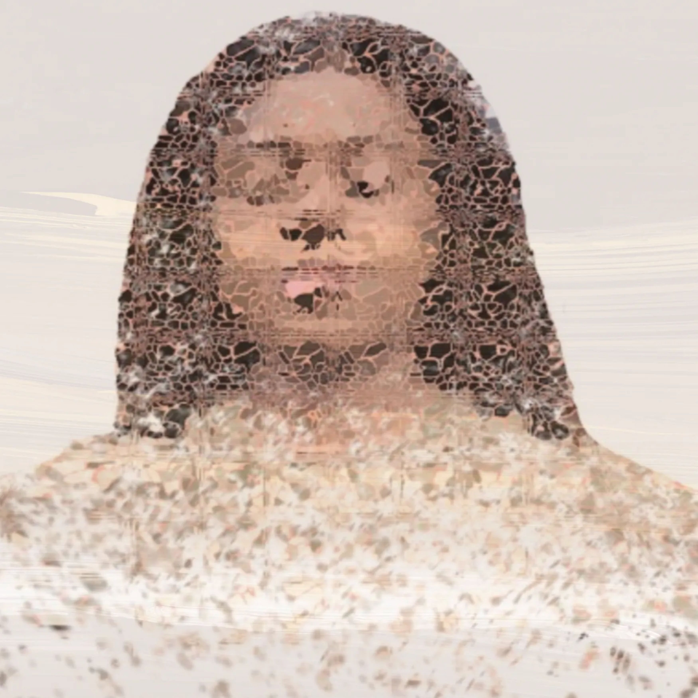
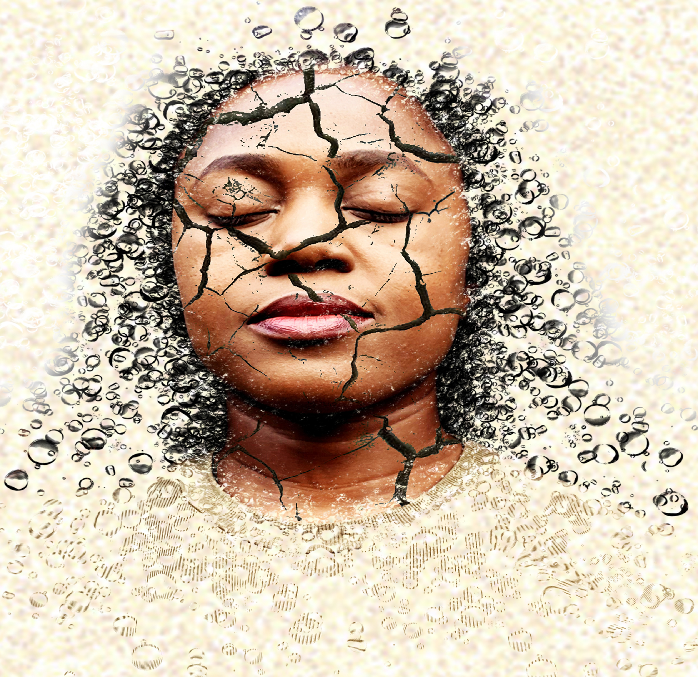
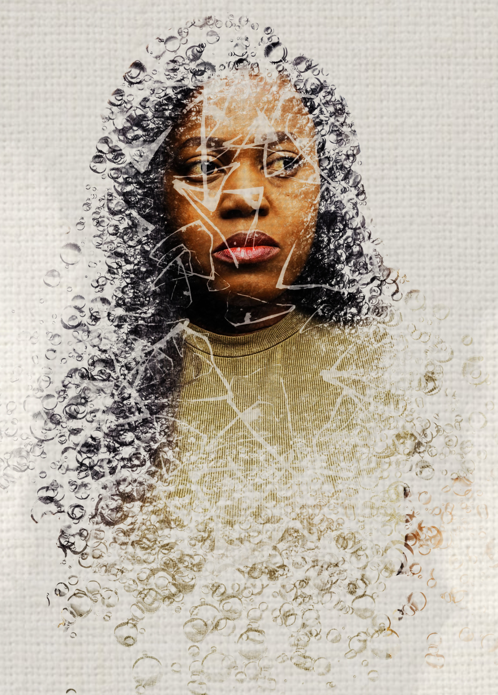
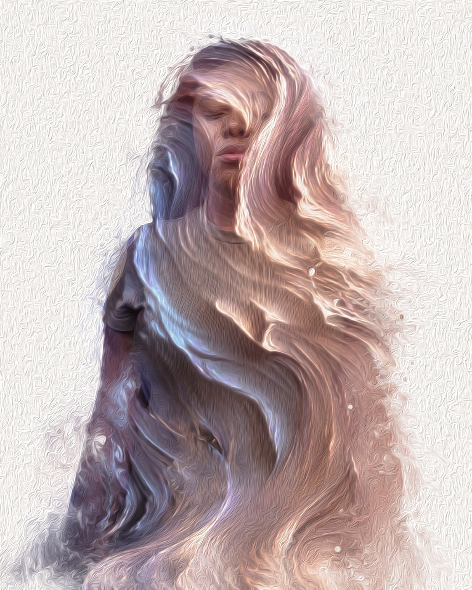
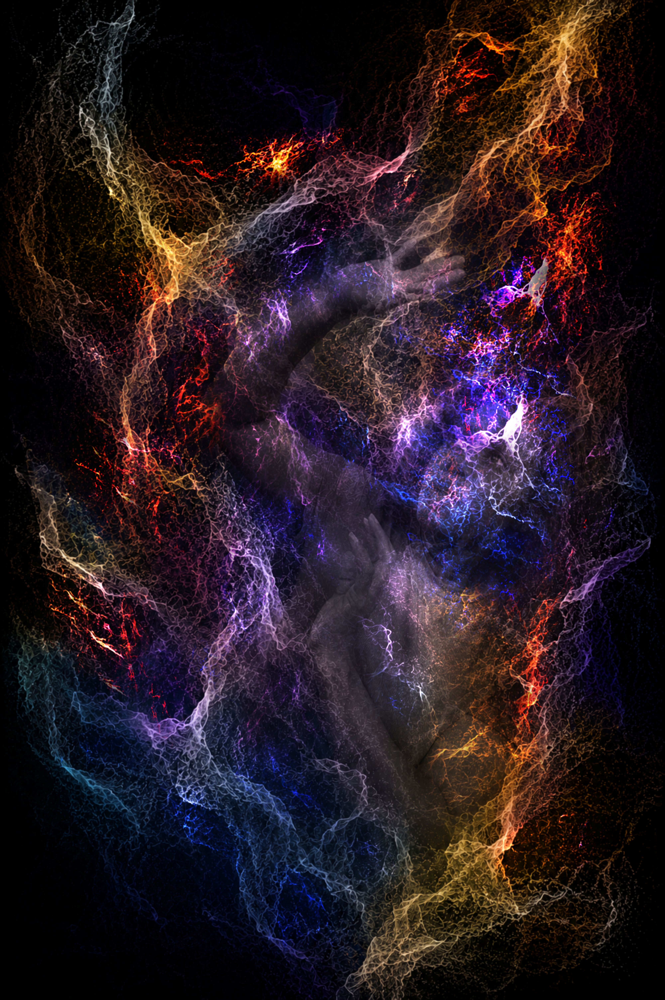
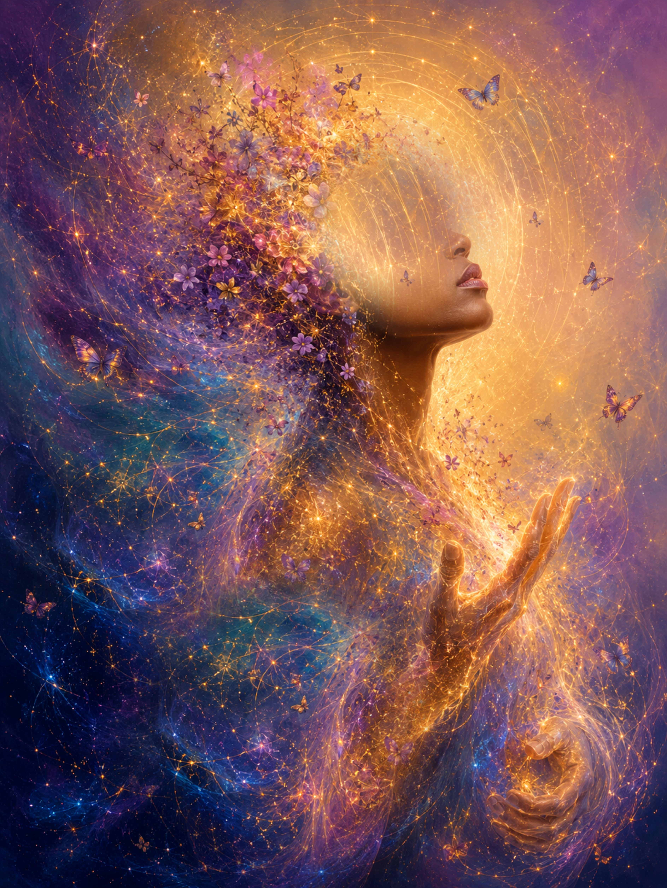
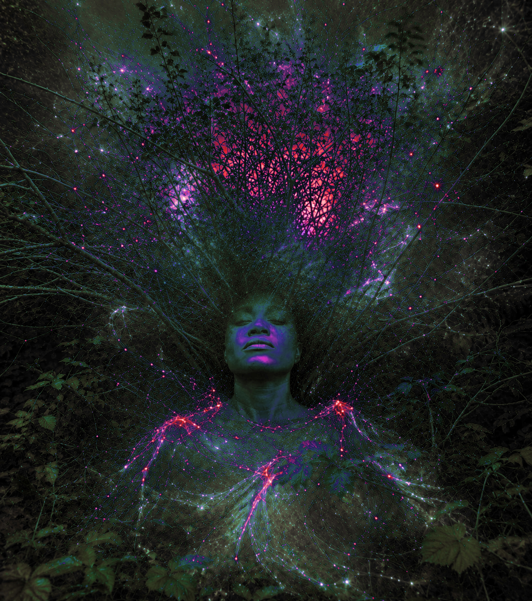

Dissolving Echoes
Digital Photography
An exploration of identity as something fluid rather than fixed. Layers dissolve and reform, suggesting how memories, emotions and experiences gradually reshape our sense of self.
 Joycenuwa
Joycenuwa
Portfolio
Inner Landscapes is a series of digital self-portraits exploring the unseen emotional states that shape our inner lives. Through fragmentation, dissolution and reconstruction, the works reflect experiences of uncertainty, vulnerability, healing and renewal. Together, they consider identity and emotional wellbeing as evolving experiences rather than fixed states.
← Back to Portfolio
Digital Photography
An exploration of identity as something fluid rather than fixed. Layers dissolve and reform, suggesting how memories, emotions and experiences gradually reshape our sense of self.

Digital Photography
Cracks become spaces for transformation rather than signs of damage. The work reflects resilience and the possibility of rebuilding through periods of uncertainty.

Digital Photography
This work considers identity as a continuous process of change. Layers, textures and movement suggest that who we are is continually shaped through experience and adaptation.

Digital mixed media
Unwritten Self explores the unfinished nature of self-understanding. Fragmented spaces leave room for uncertainty, possibility and the freedom to remain continually in progress.

Digital mixed media
Weight of Echoes reflects the emotional landscapes people carry but rarely reveal. Overlapping forms embody the tension between vulnerability, endurance and the quiet strength required to move forward.

Digital mixed media
Aetherial Awakening explores emergence between the visible and unseen. Flowing currents of colour and light suggest transformation, self-discovery and the forces that shape identity.

Digital mixed media
Emergent Being explores the quiet process of becoming. Rooted in darkness yet reaching towards light, the work reflects inner growth, resilience and the unseen transformation that occurs as we reconnect with ourselves. It suggests that renewal often begins beneath the surface before gradually emerging into view.

Digital mixed media
Rooted Infinity considers the relationship between identity, nature and the universe. Branches extend beyond the figure like living networks, suggesting that personal growth is shaped by our connection to the natural world. The work reflects the idea that even in stillness, we remain deeply rooted within something far greater than ourselves.